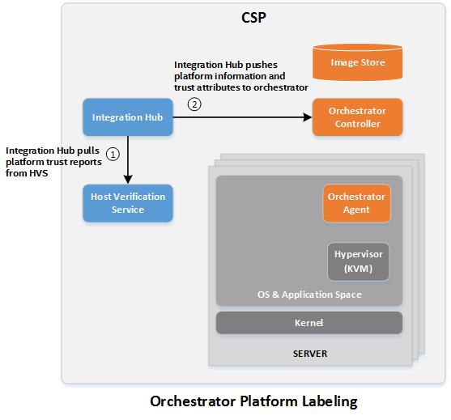

Trusted Workload Placement
Trusted Workload Placement
Intel® SecL can be integrated with Cloud scheduler services (or potentially other services) to provide additional security controls. For example, by integrating Intel® SecL with the OpenStack scheduler service, the OpenStack placement service can incorporate the Intel® SecL security attributes into VM scheduling.
The Integration Hub
The Integration Hub acts as the integration point between the Verification Service and a third party service. The primary purpose of the Hub is to collect and maintain up-to-date attestation information, and to “push” that information to the external service. The secondary purpose is to allow for multitenancy, the Verification Service does not allow for permissions to be applied for specific hosts, so a user with the “attestation” role can access all attestations for all hosts. By using separate Integration Hub instances for each Cloud environment (or "tenant"), the Hub will push attestations only for the associated hosts to a given tenant’s integration endpoints.
For example, Tenant A is using hosts 1-10 for a Kubernetes environment. Tenant B is using hosts 11-15 for a different Kubernetes environment. Two Hub instances must be configured, one managing tenant A's Kubernetes cluster and a second instance managing Tenant B's Kubernetes environment. Each integration Hub will automatically retrieve the list of hosts used by its configured orchestration endpoint, retrieve the attestation reports only for those hosts, and push the attestation attribute information to each configured endpoint. Neither tenant will have access to the Verification Service, and will not be able to see attestation or other host details regarding infrastructure used by other tenants.
Different integration endpoints can be added to the Integration Hub through a plugin architecture. By default, the Integration Hub includes plugins for Kubernetes.

Integration with Kubernetes
Through the use of Custom Resource Definitions for the Kubernetes
Control Plane, Intel® Security Libraries can make Kubernetes aware of Intel®
SecL security attributes and make them available for pod orchestration.
In this way, a security-sensitive pod can be launched only on Trusted
physical worker nodes, or on physical worker nodes that match specified
Asset Tag values.
Note
This control only applies to pods launched using the Kubernetes scheduler, and these scheduling controls will not affect manually-launched instances where a specific worker node is defined (since this does not use the scheduler at all). Intel SecL-DC uses existing Kubernetes interfaces and does not modify Kubernetes code, using only the standard Custom Resource Definition mechanism to add this functionality to the Kubernetes Control Plane. The datacenter owner or Kubernetes administrator is responsible for the security of the Kubernetes workload scheduling process in general, and Intel recommends following published Kubernetes security best practices.
Prerequisites
-
Verification Service must be installed and running.
-
Kubernetes Control Plane Node must be installed and running
-
The supported Kubernetes versions are
1.21.4,1.22.2and the integration is validated with1.21.4,1.22.2 -
Kubernetes Worker Nodes must be configured as physical hosts and attached to the Control Plane Node
Installing the Intel® SecL Custom Resource Definitions
Intel® SecL uses Custom Resource Definitions to add the ability to base orchestration decisions on Intel® SecL security attributes to Kubernetes. These CRDs allow Kubernetes administrators to configure pods to require specific security attributes so that the Kubernetes Control Plane Node will schedule those pods only on Worker Nodes that match the specified attributes.
Two CRDs are required for integration with Intel® SecL – an extension
for the Control Plane nodes, and a scheduler extension.The extensions are deployed as a Kubernetes
deployment in the isecl namespace.
Note
Please refer detail steps given for Deploying Individual Services Using Helm section.
Configuring Pods to Require Intel® SecL Attributes
-
(Optional) Verify that the worker nodes have had their Intel® SecL security attributes populated:
kubectl get nodes --show-labelsThe output should show the Trust staus and any Asset Tags applied to all of the registered Worker Nodes.
-
Add the following to any Pod creation files:
spec: affinity: nodeAffinity: requiredDuringSchedulingIgnoredDuringExecution: nodeSelectorTerms: - matchExpressions: - key: isecl.trusted operator: In values: - "true" - key: isecl.TAG_Country operator: In values: - CA - US - key: isecl.TAG_Customer operator: In values: - Coke - Pepsi - key: isecl.TAG_State operator: In values: - CA
The isecl.trusted key defines the requirement for a Trusted host. Only
one of these keys should be used. The isecl.TAG_ keys indicate Asset
Tags; if the workload should only launch on hosts with the COUNTRY=US Asset Tag, the pod should be launched with the matchExpression key
isecl.TAG_COUNTRY with the value US.
All of the matchExpression definitions must be true for a given worker
node to launch the pod – in the example above, the host must be
attested as Trusted with Asset Tags Country=US ,Customer=Customer1 and State=CA. If the worker node has
additional Asset Tags beyond the ones required, the pod will still be
able to be launched on that node. However, if one of the specified
Tags is missing or has a different value, that worker node will not be
used for that pod.
Tainting Untrusted Worker Nodes
Optionally, the Intel® SecL Kubernetes controller can be configured to flag
worker nodes as tainted to prevent any pods from launching on them.
This restriction is applied regardless of whether the pod has a specific
trust policy – if a worker node is flagged as tainted no pods will be
launched on that worker.
This setting is disabled by default. To enable this setting:
Note
Please refer detail steps given in Deploying Intel SecL Use Cases Using Helm section.
- Pulling Trusted Workload Placement helm chart
helm pull isecl-helm/Trusted-Workload-Placement --version $VERSION && tar -xzf Trusted-Workload-Placement-$VERSION.tgz Trusted-Workload-Placement/values.yaml
-
Edit the
values.yamlfile from helm chart for Trusted workload placement usecase. -
set the following options under isecl-controller:
nodeTainting:
# If set to true, taints the node which are joined to the k8s cluster.
taintRegisteredNodes: true
# If set to true, taints the node which are rebooted in the k8s cluster.
taintRebootedNodes: true
# If set to true, taints the node which has trust tag set to false in node labels.
taintUntrustedNode: true
- Install Trusted Workload Placement Usecase helm chart
helm install trusted-workload-placement isecl-helm/Trusted-Workload-Placement --version $VERSION -f Trusted-Workload-Placement/values.yaml --create-namespace -n <namespace>
If the TAINT_UNTRUSTED option is used, worker nodes that attest as untrusted will be tainted with the
NoExecute flag and unable to launch pods. There may be a delay of up to 2 minutes before the taint is applied as the Integration Hub only retrieves new reports every 2 minutes.
If the TAINT_REGISTERED option is used, worker nodes will be tainted by default by the Intel SecL extension controller. The taint will be removed when the Integration Hub sees a Trusted report and updates the controller.
Similarly, if the TAINT_REBOOTED option is used, worker nodes will be tainted by default when rebooted by the Intel SecL extension controller. The taint will be removed when the Integration Hub sees a Trusted report and updates the controller.
If a worker was previously considered tainted and the untrusted state is resolved, the Intel® SecL CRDs will remove the tainted flag and the worker will be able to launch pods again.
Note
Important: The taint rules can potentially result in all available worker nodes becoming tainted due to a mass-reboot, a mistake with Flavor configuration, etc. This is especially relevant for small proof-of-concept deployments that may only use a limited number of worker nodes. Tainted worker nodes will be evacuate any Intel SecL services, which prevents ISecL from being used to remediate the issue. It is strongly recommended to set taint tolerations for each of the Intel SecL management plane services such that they can still run on tainted workers to prevent such a situation. These settings are not required if the taint options are set to "false" (default).
The following taints are used by the Intel SecL extension controller:
"taints": [
{
"effect": "NoSchedule",
"key": "untrusted",
"value": "true"
},
{
"effect": "NoExecute",
"key": "untrusted",
"value": "true"
}
Pods can be configured to ignore these taints using "tolerations:"
tolerations:
- key: "untrusted"
operator: "Equal"
value: "true"
effect: "NoSchedule"
- key: "untrusted"
operator: "Equal"
value: "true"
effect: "NoExecute"
Note that some pods, including the Trust Agent, should use these tolerations even on untrusted workers. The Trust Agent is particularly important because, without the Trust Agent running on the worker to generate a new trust report, the taints will not be cleared.